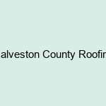

News
roofing companies
roofing company
roof repair
roofing near me
More
roofing contractors
roofing contractor
roof repair near me
roof replacement near me
roof installation near me
deer park roofing
roofers santa fe
santa fe roofing
santa fe roofers
roofers pearland
pearland roof repair
roof repair in pearland
lakes country roofing
roofers in galveston
friendswood roofing
roofers friendswood
roofers in friendswood
roofers in league city
galveston roofers
roofing galveston
league city roofers
roofer friendswood tx
roofer galveston tx
roofers in friendswood tx
roof repair pearland
About Us
Contact Us
Galveston County Roofing
What To Do After A Storm Damaged Roof
Oct 13, 2023
What to Do After a Storm Damaged Roof Are you dealing with a storm damaged roof? Has wind and hail wreaked havoc on your home? Don’t worry, we’ve got you covered. In this article, we’ll guide you through the necessary steps to take after a storm hits. From inspecting your roof to filing an insurance […] The post What To Do After A Storm Damaged Roof appeared first on Galveston County Roofing.
Signs that your roof needs to be replaced now
Feb 03, 2022
Signs that your roof needs to be replaced now Most people know that they need to replace their roofs eventually. The average lifespan of a roof is around 20 years, and most roofs last considerably less than that. For those living in colder or wetter climates, roofs will need to be replaced more frequently. However, […] The post Signs that your roof needs to be replaced now appeared first on Galveston County Roofing.
Why You Should Take Time to Inspect Your Roof
Oct 29, 2021
Your roof is constantly exposed to the elements, which can create wear and tear. Roof damage is severe because it poses a threat to your home’s structure. Roofs have specific components that are vulnerable to different threats. It is essential for homeowners to be able to get their roofs inspected to identify the damage so […] The post Why You Should Take Time to Inspect Your Roof appeared first on Galveston County Roofing.
When should you trim your trees?
Oct 28, 2021
Trees can become overgrown for many different reasons. Over time, trees can cause damage to your home if the tree’s branches are too close to your house, or they begin to overgrow the yard that you have worked so hard on. Mature trees need to be pruned before they do extensive damage to your property […] The post When should you trim your trees? appeared first on Galveston County Roofing.